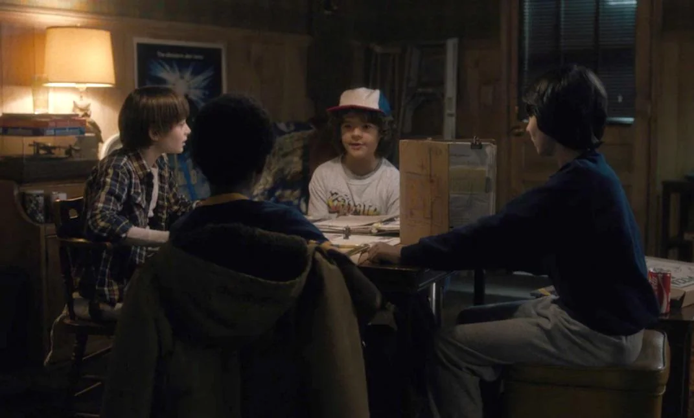
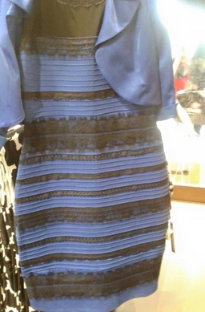
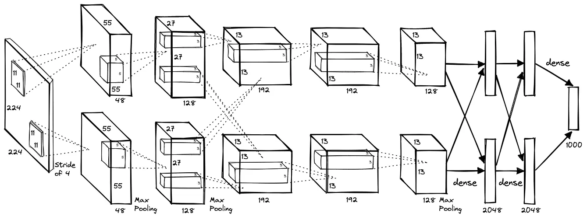
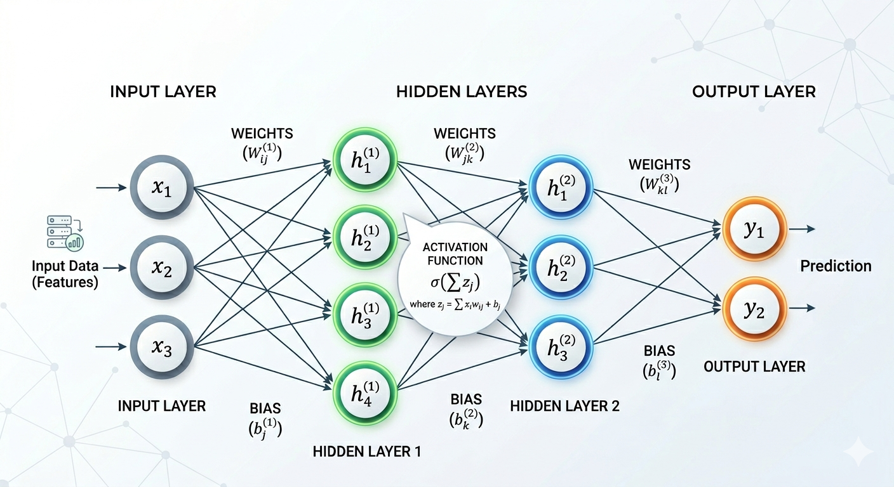

AI Days - Workshop · Maggio 2026
Visione
Artificiale
Come i sistemi AI imparano a vedere e capire il mondo
Pierluigi Zama Ramirez · Professore Associato, Università Ca' Foscari di Venezia
Dipartimento di Scienze Ambientali, Informatica e Statistica

Cosa vedi?
Prenditi 30 secondi. Pensa a tutto ciò che puoi dedurre da questa singola immagine.
© Netflix / Stranger Things — uso illustrativo a scopo didattico
Parte Prima
Come
Vediamo
Il sistema visivo umano e la natura della percezione
Parte 1 — Come Vediamo
In meno di un secondo,
sai già…
- Quante persone ci sono nella stanza
- La loro età approssimativa
- L'epoca e il contesto
- L'umore e la tensione nella scena
- Cosa potrebbero stare facendo
- Le loro relazioni reciproche
Tutto questo da una griglia 2D di punti colorati.
Parte 1 — Come Vediamo
L'Occhio
come Sensore
- ~130 milioni di fotorecettori
- Bastoncelli (luce/buio) e coni (colore)
- Solo i 2° centrali sono a fuoco nitido
- L'occhio compie 3–5 saccadi al secondo
L'analogia con la fotocamera ha i suoi limiti:
non catturiamo mai un singolo "frame".
Parte 1 — Come Vediamo
Il Cervello
Fa la Maggior
Parte del Lavoro
- Il nervo ottico ha un punto cieco — non lo noti mai
- Completiamo il movimento, il colore e il contesto dalla memoria
- ~50% della corteccia è coinvolta nella visione
- La percezione è una costruzione, non una registrazione
Parte 1 — Illusioni Ottiche
Il Cervello
Fa delle Assunzioni
Entrambe le linee hanno esattamente la stessa lunghezza.
Le frecce attivano indizi di profondità appresi
vivendo in un mondo 3D.
— Illusione di Müller-Lyer, 1889
Parte 1 — Illusioni Ottiche
Punti Fantasma
Vedi dei punti grigi che lampeggiano alle intersezioni?
Guardane uno direttamente — scompare.
I punti non ci sono. Il tuo sistema visivo li sta inventando dal pattern di contrasto.
— Griglia di Hermann, 1870
Parte 1 — Illusioni Ottiche
"Il Vestito" · 2015
Una foto diventò virale. Alcune persone videro blu e nero. Altre videro bianco e oro. Stessa immagine. Stessi pixel.
Il tuo cervello stima l'illuminazione della scena e corregge i colori automaticamente. Assunzioni diverse → percezione diversa.
Quale vedi tu? Chiedi alla persona accanto.

Un'intuizione chiave
"La visione non è una registrazione passiva del mondo — è una costruzione attiva del cervello."
Parte Due
Come le
Macchine Vedono
Dagli array di pixel alle reti neurali
Parte 2 — Come le Macchine Vedono
Dalla Luce ai Numeri
Camera
Una lente mette a fuoco la luce su un sensore d'immagine
luce
Image Sensor
Milioni di cellule fotosensibili (fotositi). Ognuna misura l'intensità della luce in un punto — producendo un numero per canale colore.
numeri
Pixel Grid
Ogni cella diventa un numero da 0 a 255. L'intera griglia di numeri è l'immagine.
Una fotocamera da 12 MP → griglia di 4000 × 3000 = 12 milioni di valori, ripetuti 3× per R, G, B → 36 milioni di numeri in totale.
Parte 2 — Come le Macchine Vedono
Tre Canali, Milioni di Colori
Canale Rosso
0–255
Canale Verde
0–255
Canale Blu
0–255
Combinati
= colore completo
Un'immagine è un array 3D: altezza × larghezza × 3 (R, G, B). Ogni operazione nel computer vision opera su questi numeri.
Parte 2 — Come le Macchine Vedono
Per un Computer, un'Immagine È Solo Numeri
Parte 2 — Come le Macchine Vedono
Il
Divario Semantico
Un computer vede:
[58, 42, 36, 61, 45, 38, ...]
Un essere umano vede:
"Un gruppo di ragazzi, notte, energia nervosa."
Come colmiamo il divario tra
numeri grezzi e significato?
La Visione Artificiale (Computer Vision) è la risposta.
Input
[58,42,36,61,45,38,
72,56,44,68,52,40,
82,68,54,78,64,50...]
?
Significato
"Persone intorno a un tavolo,
stanza fiocamente illuminata,
tarda notte, anni '80"
Parte 2 — Come le Macchine Vedono
Approcci
Iniziali
Anni '60–2000: i programmatori cercavano di
costruire manualmente le regole della visione.
- Edge detection (trovare dove cambia la luminosità)
- Istogrammi di colore (descrivere le immagini tramite distribuzione del colore)
- SIFT, HOG: descrittori di feature progettati manualmente
- SVM: classificare in base a quelle feature
Problema: le regole che funzionano in un contesto
falliscono completamente in un altro.
Il Punto di Svolta
2012
AlexNet vince ImageNet
Il tasso di errore scese dal 26,2% al 15,3% in un solo anno.
I concorrenti con feature costruite manualmente: sopra il 26%. Una rete neurale, addestrata su GPU: 15%.
Questo momento segnò l'inizio dell'era del deep learning.

Parte 2 — Come le Macchine Vedono
Cos'è una
Rete Neurale?
Una rete neurale è una funzione matematica composta da molte operazioni semplici organizzate in layer.
Ogni operazione moltiplica un input per un weight (parametro) e aggiunge un bias. Milioni di queste piccole moltiplicazioni sovrapposte possono approssimare funzioni estremamente complesse.
Parameters / Weights
Le manopole della rete. Un modello di visione moderno ne ha da decine di milioni a miliardi. Sono l'unica cosa che cambia durante il training — l'architettura rimane fissa.

Parte 2 — Training e Inference
Il Task:
Cane o Gatto?
Binary classification: data un'immagine qualsiasi, il modello deve produrre una singola etichetta — cane o gatto.
Non esiste una regola scrivibile per questo. Non puoi elencare tutti i pattern di pixel che formano un gatto. Ma puoi mostrare migliaia di esempi — e lasciare che la rete lo scopra.
La stessa idea si scala a qualsiasi numero di categorie: immagini mediche, immagini satellitari, volti, veicoli — qualsiasi cosa si possa etichettare.
vs
Parte 2 — Training
Passo 1:
Il Dataset
Prima del training, abbiamo bisogno di una grande raccolta di immagini etichettate — ogni immagine abbinata alla risposta corretta.
Il modello vedrà migliaia — o milioni — di queste coppie. La qualità e la diversità del dataset determinano direttamente ciò che il modello può imparare.
Non vengono scritte regole. Tutta la conoscenza deriva dagli esempi.
Parte 2 — Training
Passo 2:
Il Training
Loop
Al modello viene mostrata un'immagine alla volta. Ogni volta che effettua una predizione, controlliamo — e aggiustiamo i weight per fare meglio la prossima volta.
Questo ciclo si ripete milioni di volte. Ogni round è una iterazione. Dopo ciascuna, i weight sono leggermente diversi — leggermente migliori.
Nessuno scrive le regole. Il modello le trova fallendo, venendo corretto e riprovando.
Immagine di training
L'immagine e la sua etichetta corretta entrano nella rete
La rete fa una predizione
Attualmente sbaglia la maggior parte delle volte
✗
Errore calcolato
Ha predetto "Cane" — l'etichetta dice "Gatto". Quanto ha sbagliato?
Weight aggiornati
Tutti i parametri spostati leggermente verso la risposta corretta — backpropagation
Ripeti con l'immagine successiva — milioni di volte
Parte 2 — Inference
Esecuzione del Modello Addestrato
Immagine di Input
Una foto — qualsiasi nuova immagine
che il modello non ha mai visto
Pixel → Numeri
Ogni pixel = 3 numeri (R, G, B)
Rete
🔒 Weight congelati
Nessun aggiornamento durante l'inference
Predizione
Cat
94%
Dog
6%
È un gatto ✓
Esegue in millisecondi · nessun weight modificato
Parte 2 — Come le Macchine Vedono
Un Modello È
Due File
In pratica, una rete neurale addestrata viene salvata come esattamente due elementi.
L'architettura specifica la struttura — quanti layer, di che tipo, come connessi. Il file dei weight memorizza i miliardi di numeri appresi.
Per eseguire un modello hai bisogno di entrambi. L'architettura ti dice la forma; i weight ti dicono i valori.
ResNet-50: architettura = ~100 righe di codice · weight = file da 98 MB
GPT-4: file dei weight ≈ centinaia di GB
Architettura
Codice che definisce la struttura: layer, connessioni, operazioni. File piccolo.
Weights
File binario con tutti i parametri appresi. Può essere in gigabyte. Questa è la "conoscenza" del modello.
Parte 2 — Come le Macchine Vedono
Layer di
Astrazione
I layer iniziali imparano pattern semplici.
I layer successivi li combinano in concetti complessi.
Layer 1 — Bordi e orientamenti
Layer 2 — Texture e angoli
Layer 3 — Parti di oggetti (occhi, ruote…)
Layer finali — Oggetti interi e scene
Parte 2 — Come le Macchine Vedono
Il Vettore
Latente
Dopo aver elaborato attraverso tutti i suoi layer, una NN comprime l'immagine in un elenco compatto di numeri — in una rete di classificazione tipicamente 512 o 2048 valori.
Non si tratta dei pixel grezzi. È la rappresentazione interna del modello di ciò che ha visto — la sua "comprensione" dell'immagine.
Lo chiamiamo latent vector o embedding.
Questo concetto è il fondamento di tutto ciò che viene dopo.
[0.23, −0.87, 1.12, 0.04,
0.68, −0.31, 0.92, 0.15,
−0.44, 0.77, 0.06, −0.58,
… altri 508 valori …]
L'"impronta digitale" dell'immagine — un punto in uno spazio ad alta dimensionalità
Parte 2 — Come le Macchine Vedono
Latent Space
Ogni immagine diventa un punto in uno spazio ad alta dimensionalità. La geometria di quello spazio riflette il significato:
- Le immagini simili si trovano vicine
- Categorie diverse formano cluster distinti
- Distanza tra punti = similarità semantica
Questa struttura non è programmata — emerge dall'apprendimento.
Visualizzato con t-SNE o UMAP: strumenti che comprimono migliaia di dimensioni a 2D per essere visti dagli esseri umani.
Parte 2 — Dalla Rappresentazione ai Task
Cosa Possiamo Fare con una Rappresentazione Latente?
Image Classification
"Cosa c'è in questa immagine?" — un'etichetta per immagine.
Object Detection

Etichetta + bounding box per ogni oggetto.
Segmentation
Classificare ogni singolo pixel.
3D Reconstruction

Costruire strutture 3D da immagini 2D.
Object Tracking
Tracciare oggetti attraverso i frame.
···
E molto altro
Pose estimation, depth, generation, retrieval, anomaly detection…
Tutti i task condividono un'idea: imparare una buona rappresentazione una volta, poi aggiungere una testa specifica per il task.
Pratica
Attività 1
Cosa vede davvero il modello?
Attività 1 — Istruzioni
Usando Google Teachable Machine
⏱ 10 minuti
Attività 1 — Discussione
Confrontiamo le Nostre Esperienze
Cosa ha funzionato bene?
- Categorie chiare, buon contrasto
- Molti esempi di training
- Illuminazione e angolo uniformi
Cosa ha fatto fallire il modello?
- Condizioni di illuminazione diverse
- Angolazioni o distanze insolite
- Sfondo disordinato
- Pochissimi esempi di training
Non sono bug — rivelano come funziona davvero il modello.
Blocco 1 — Punti Chiave
Cosa Abbiamo Stabilito
Visione umana
La percezione è una costruzione attiva, non una registrazione. Il nostro cervello colma le lacune, fa assunzioni e viene facilmente ingannato.
Le immagini come dati
Per un computer, un'immagine è una matrice di numeri. Il significato semantico non è nei pixel — deve essere appreso.
Deep learning
Le NN imparano feature gerarchiche dai dati. Nessuno scrive le regole — i pattern emergono da milioni di esempi.
I limiti
I modelli addestrati su pixel sono fragili. Possono riconoscere pattern senza "capire" cosa significhino.
Pausa
Blocco 2
Dalla Vista
alla Comprensione
Come si passa da un modello che riconosce pixel a uno che collega immagini, linguaggio e significato?
Parte Tre
Foundation
Models
Apprendimento su larga scala — e perché cambia tutto
Parte 3 — Foundation Models
Foundation
Models
Un foundation model è addestrato su dati massivi e diversificati con l'obiettivo di imparare una rappresentazione general-purpose — non un task specifico.
Una volta addestrato, lo stesso modello può essere adattato ("fine-tuned") a molti downstream task con pochissimi dati aggiuntivi.
- Addestrato una volta su enormi quantità di dati
- Rappresentazione generale — non specifica per un task
- Riutilizzato su molti task e domini
- Esempi: ResNet, CLIP, GPT-4, Gemini
Pre-training
Miliardi di immagini / token
Obiettivo generale
Settimane su migliaia di GPU
Foundation Model
Rappresentazione general-purpose ricca del mondo
Task A
Task B
Task C
Parte 3 — Foundation Models
Due Modi di Imparare
Supervised Learning
Ogni esempio di training ha un'etichetta umana.
Il modello impara a prevedere l'etichetta.
- Richiede un enorme sforzo di etichettatura
- Limitato alle categorie che qualcuno ha deciso di etichettare
- La rappresentazione è plasmata dal task
- Funziona ottimamente per problemi specifici e ben definiti
ImageNet: 14M immagini · 22.000 categorie · anni di annotazione umana
Self-Supervised Learning
Nessuna etichetta umana. Il modello crea il proprio segnale di supervisione dai dati stessi.
- Si scala a qualsiasi quantità di dati non etichettati
- Impara una rappresentazione generale, non specifica per un task
- Necessario per addestrare modelli veramente fondazionali
- La chiave dell'AI moderna su larga scala
Internet: oltre 1 miliardo di immagini, quasi interamente non etichettate — supervisione gratuita
Parte 3 — Self-Supervised Learning
Imparare Senza Etichette
Dai al modello un puzzle da risolvere. Risolverlo richiede di capire l'immagine.
Puzzle Jigsaw
Mescola le patch. Il modello deve riordinarle — il che richiede di capire come appaiono oggetti e scene.
Colorization
Rimuovi il colore. Il modello deve prevedere l'originale — il che lo costringe a capire cosa sono gli oggetti: cielo, pelle, erba, pelliccia.
Masked Autoencoder
MAENascondi il 75% delle patch. Il modello deve ricostruire le parti mancanti — il che richiede di capire la struttura globale della scena.
Parte 3 — Dalla Visione al Linguaggio
Ora Abbiamo
Potenti Feature
Visive
- Rappresentazioni ricche apprese da milioni di immagini
- Nessuna etichetta manuale richiesta
- Transfer su qualsiasi task di visione con pochi dati aggiuntivi
- Catturano bordi, texture, forme e struttura della scena
I foundation model ci danno le migliori feature visive mai costruite. Cosa manca ancora?
Ma manca qualcosa…
- Un modello che vede un cane non ha parola per esso
- Non può rispondere "cos'è questo?" in linguaggio naturale
- Non può essere istruito: "trova tutti gli oggetti rossi"
- Nessun accesso alla conoscenza del mondo, al contesto o al significato
Il pezzo mancante: il Linguaggio
Parte 3 — Dalla Visione al Linguaggio
Due Prospettive dello Stesso Mondo
Una descrizione della scena
"Quattro ragazzi giocano a un gioco di ruolo attorno a un tavolo in un seminterrato dalle pareti in legno. L'ambiente, illuminato dalla luce calda di una lampada vintage, è cosparso di dadi, mappe e schede, mentre il gruppo appare concentrato sulla narrazione tra cartoni della pizza, bibite e poster cinematografici."
Il linguaggio cattura la narrativa, le relazioni, il contesto e il significato — ma lascia il mondo visivo vago.
Un'immagine
Le immagini catturano ogni dettaglio visivo — ma nessun pixel ti dice che è il 1983, o chi siano queste persone l'una per l'altra.
Parte 3 — Dalla Visione al Linguaggio
Cosa Rende il Linguaggio Diverso?
Immagine
- Segnale continuo — infiniti valori di pixel possibili
- Struttura spaziale — i pixel vicini sono correlati
- Ricco di texture, colore e geometria
- Nessun ordinamento o sequenza intrinseca
- Ambiguo senza contesto
[58,42,36,61,45,38,...]
→ una griglia di numeri
Linguaggio
- Token discreti — vocabolario finito (~50.000 parole)
- Struttura sequenziale — l'ordine porta significato
- Simbolico e composizionale — il significato è costruito dalle parti
- Ragionamento esplicito e astrazione
- Può descrivere cose che non esistono in nessuna immagine
[the, cat, sat, on, the, mat]
→ una sequenza di token
Entrambe le modalità codificano il significato. Ma il linguaggio ha qualcosa che le immagini non hanno: struttura simbolica esplicita e composizionalità.
Parte 3 — Language Models
Elaborazione del Linguaggio
Le stesse idee che funzionano per le immagini si applicano al testo — con una differenza chiave: il testo è una sequenza di token discreti.
- Il testo viene convertito in una sequenza di numeri (token ID)
- Una rete neurale elabora la sequenza ed estrae una rappresentazione
- Quella rappresentazione cattura il significato, la grammatica, le relazioni
- La rete può poi predire il token successivo, classificare il sentiment, rispondere a domande…
Stessa idea architetturale della visione (layer che estraggono feature sempre più astratte), ma operante su sequenze invece che su griglie.
Testo di input
"The cat sat on the mat"
Tokenizzazione
Token ID (numeri interi)
[464, 4263, 3332, 319, 262, 2603]
Rappresentazione latente
[0.42, −0.18, 0.91, 0.07, … 512 valori]
codifica: soggetto=gatto, azione=seduto, luogo=stuoia
Parte 3 — Visione + Linguaggio
CLIP
Contrastive Language–Image Pre-training · 400 milioni di coppie immagine-testo · immagini e testo nello stesso spazio vettoriale · nessuna etichetta di task necessaria
Un'immagine viene codificata
come vettore (un elenco di numeri)
Le coppie corrispondenti vengono
avvicinate.
Le coppie non corrispondenti
vengono allontanate.
"A dog running
in a park"
Una didascalia testuale viene codificata
nello stesso spazio vettoriale
Parte 3 — Visione + Linguaggio
Zero-Shot
Recognition
CLIP non è mai stato esplicitamente addestrato a riconoscere
"un fermo immagine di Stranger Things" — eppure ci riesce.
Perché ha imparato relazioni visivo-linguistiche generali, può ragionare su qualsiasi descrizione testuale.
Confronti l'immagine con molti testi candidati:
"una festa di compleanno," "una scena di un film horror,"
"bambini che giocano a D&D" — e trovi la corrispondenza più vicina.
Parte 3 — AI Multimodale
Due Prospettive dello Stesso Mondo
Una descrizione della scena
"Quattro ragazzi giocano a un gioco di ruolo attorno a un tavolo in un seminterrato dalle pareti in legno. L'ambiente, illuminato dalla luce calda di una lampada vintage, è cosparso di dadi, mappe e schede, mentre il gruppo appare concentrato sulla narrazione tra cartoni della pizza, bibite e poster cinematografici."
Cosa manca?
I volti esatti, la luce specifica, la texture degli oggetti, la geometria precisa dello spazio. Migliaia di immagini potrebbero corrispondere a questa descrizione.
Un'immagine
Cosa manca?
La narrativa, le relazioni sociali, il contesto storico, la storia emotiva. Nessun pixel ti dice che è il 1983.
Una rappresentazione multimodale combina entrambi: la ricchezza visiva dell'immagine e la struttura semantica del linguaggio — in un unico spazio condiviso.
Parte 3 — Visione + Linguaggio
Da CLIP all'AI Multimodale
in spazio condiviso
dal testo
open-source
su qualsiasi immagine
multimodale open-source
fin dall'inizio
Parte 3 — Language Models
Large Language Models
Un LLM è un foundation model per il testo: addestrato su scala enorme su un singolo obiettivo self-supervised — predire il token successivo.
Self-supervised: il testo stesso fornisce la supervisione. Nessuna etichetta necessaria — solo testo grezzo da internet, libri e codice.
- Grammatica, sintassi, stile
- Fatti, date, relazioni, conoscenza del mondo
- Ragionamento logico e analogie
- Codice, matematica, più lingue
Nessuno ha programmato niente di tutto questo. Emerge tutto dalla predizione del token successivo su larga scala.
The capital of France is Paris
Romeo loved Juliet
2 + 2 = 4
Miliardi di completamenti come questi → GPT, Claude, Gemini
Parte 3 — AI Multimodale
LLM
Multimodali
Un LLM multimodale è un language model che è stato esteso per elaborare immagini insieme al testo.
Le immagini vengono codificate (tramite un vision encoder come CLIP) in token — la stessa moneta delle parole. L'LLM elabora poi la sequenza congiunta: image token + text token insieme.
- Descrivere, didascaliare e interpretare immagini
- Rispondere a domande che richiedono ragionamento visivo
- Leggere grafici, diagrammi, screenshot, documenti
- Esempi: GPT-4V, Claude 3, Gemini, LLaVA
Image token
LLM
elabora image + text token nello stesso transformer
Text token
"In quale decennio sembra ambientata questa scena?"
Output
"L'abbigliamento, le acconciature e l'arredo suggeriscono fortemente gli anni '80."
Parte 3 — AI Multimodale
Visual Question
Answering
D: Quante persone ci sono nella scena?
R: "Quattro persone sono visibili attorno a quello che sembra essere un tavolo."
D: Qual è l'atmosfera della scena?
R: "La scena ha un'atmosfera tesa, cospirativa — la luce fioca suggerisce una segretezza notturna."
D: In quale decennio sembra ambientata?
R: "L'abbigliamento, le acconciature e l'arredo suggeriscono gli anni '80."
Pratica
Attività 2
Interroga un modello multimodale
Attività 2 — Istruzioni
Usando ChatGPT / Claude / Gemini
⏱ 15 minuti — lavora individualmente o in coppia
Attività 2 — Discussione
Cosa Hai Scoperto?
Dove ha impressionato
Descrizioni ricche, conoscenza culturale, ragionamento su contesto e relazioni
Dove ha fallito
Contare, relazioni spaziali precise, leggere testo, punti di vista insoliti
Cosa ci dice
Questi modelli NON sono oracoli — mantieni sempre la mente attiva e critica per individuare gli errori.
Questi modelli NON sono oracoli — mantieni sempre la mente attiva e critica per individuare gli errori.
Oltre la Visione
La Visione È un Solo Senso. E Gli Altri?
Camera
Frame RGB
Mappe di profondità
Audio
Spettrogrammi
Voce, suoni
LiDAR / 3D
Point cloud
Geometria precisa
IMU / Motion
Accelerometro
Giroscopio
Touch / Haptic
Pressione, forza
Mappe di texture
Ogni sensore ha il suo equivalente del "pixel". Ogni modalità richiede il proprio encoder — e le proprie sfide.
Oltre la Visione — Multi-Sensing
Percepire Insieme
Rilevamento cadute
motion blur, cambio postura
suono d'impatto, richiesta d'aiuto
picco improvviso di accelerazione
Ogni sensore da solo è ambiguo. Insieme, forniscono prove solide.
Auto a guida autonoma
segnali, corsie, pedoni
geometria 3D precisa della scena
velocità dei veicoli circostanti
posizione e contesto della mappa
Percepire il mondo attraverso molti sensori — significa comprenderlo? Cosa manca ancora?
Parte Quattro
Le Domande
Difficili
Limiti, bias e il futuro
Parte 4 — Le Domande Difficili
L'AI Riflette i Dati da cui Ha Imparato
Bias nei training data
ImageNet è composto principalmente da immagini del web occidentale. I volti sono prevalentemente di carnagione chiara. Gli oggetti di altre culture sono sotto-rappresentati.
Divari di performance
I sistemi di riconoscimento facciale hanno tassi di errore significativamente più alti su volti di carnagione scura, specialmente le donne. (Buolamwini & Gebru, 2018)
Amplificazione degli stereotipi
I modelli di image generation possono amplificare gli stereotipi presenti nei training data — associando professioni a generi o etnie specifiche.
Il bias non è un difetto tecnico. È il riflesso di chi ha creato i dati, e per chi è stato progettato il sistema.
Parte 4 — Domande Aperte di Ricerca
Su Cosa Lavorano i Ricercatori
Robustness & affidabilità
Come costruiamo modelli che falliscono in modo controllato e prevedibile, invece che catastroficamente e in silenzio?
Data efficiency
Come possono i modelli imparare da molti meno esempi — come fanno gli esseri umani fin dall'infanzia?
Ragionamento causale
Andare oltre la correlazione: può l'AI comprendere causa ed effetto dall'osservazione visiva?
Grounded language
Come colleghiamo il linguaggio all'esperienza fisica — a come le cose si sentono, non solo a come appaiono?
Parte 4 — Il Futuro
Embodied AI
e World Models
La prossima frontiera: AI che interagisce con il mondo fisico — non solo ne elabora le immagini.
- Robotica: vedere e agire in ambienti non strutturati
- World model: AI in grado di simulare cosa accadrà dopo
- Realtà aumentata: sovrapporre la comprensione digitale al mondo fisico
- AI medica: diagnosi da immagini, assistenza chirurgica
La domanda filosofica
"Un modello che sa descrivere ogni dettaglio di un'immagine la vede davvero — in qualsiasi senso significativo di quella parola?"
Non c'è consenso. Questa è una delle domande più importanti nella ricerca sull'AI — e in filosofia.
Riepilogo del Workshop
Il Percorso di Oggi
Parte 1
Come Vediamo
La percezione è costruzione attiva. Il cervello colma le lacune e fa assunzioni — proprio come una neural network.
Parte 2
Come Vedono le Macchine
Pixel → latent representation → task. Le neural network apprendono astrazioni dai dati. La rappresentazione è la chiave.
Parte 3
Foundation Model
Self-supervised learning su larga scala. Gli LLM imparano dalla predizione del next-token. I modelli multimodali unificano visione e linguaggio.
Parte 4
Le Domande Difficili
Robustness, bias, privacy. Il pattern matching potente non è comprensione — e quella distinzione conta enormemente.
Grazie
Domande?
Domande & Discussione
Visione Artificiale · AI Days 2026 - Workshop